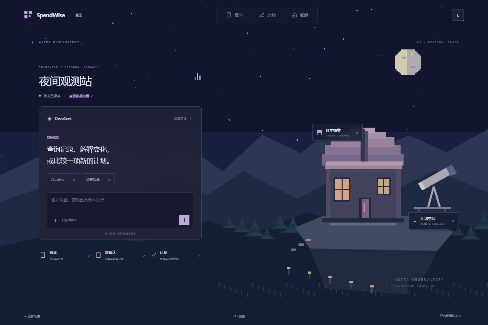
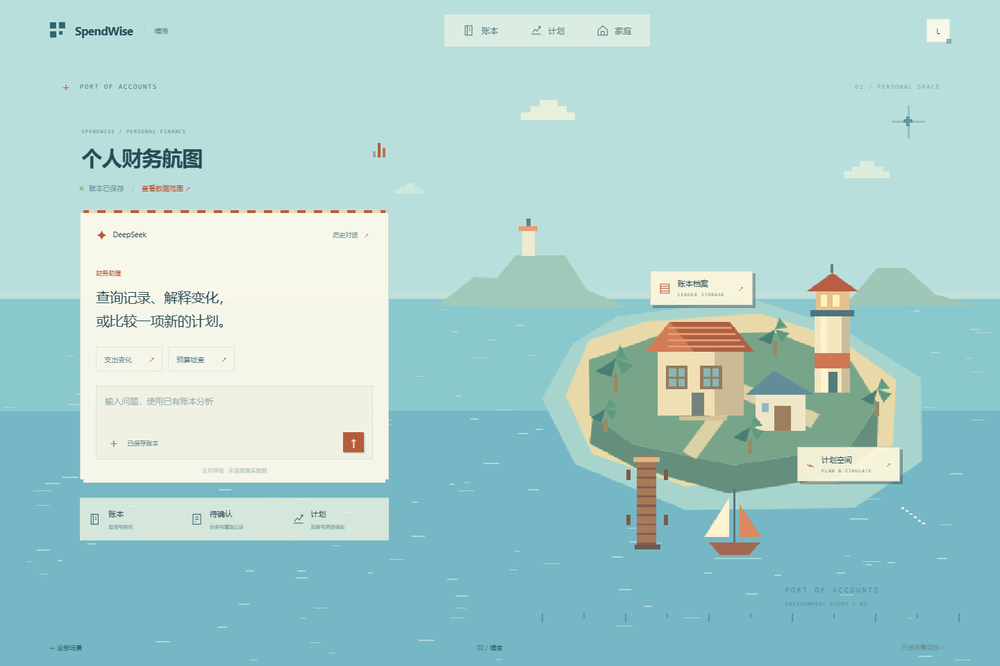
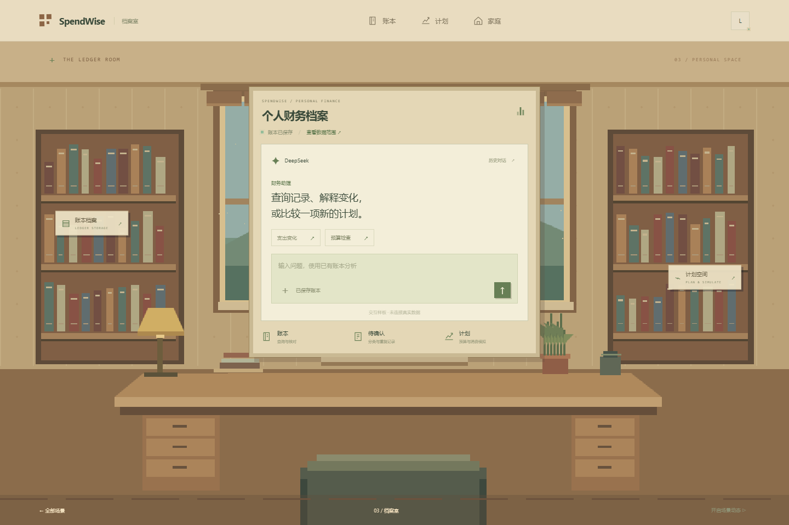
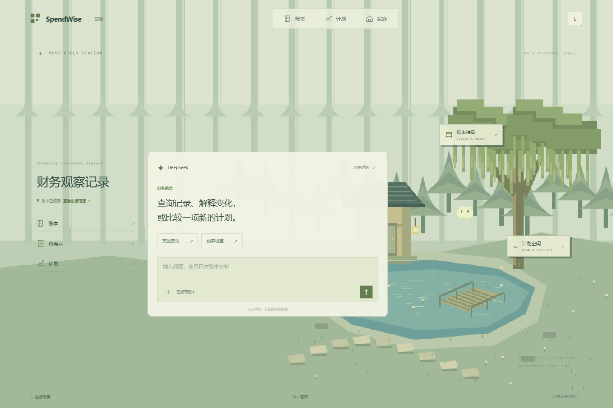

SPENDWISE / DESIGN LABSTUDY 04 — PIXEL WORLDS
第四轮 · 场景式界面四个世界。
四个世界。
同一份账本。
像素场景构成空间，AI 对话构成操作中心。
选择一个场景，进入完整主页。

01 / ASTRA OBSERVATORY
星图↗
深蓝星空 / 紫色终端 / 遥远山脉

02 / PORT OF ACCOUNTS
晴港↗
浅海群岛 / 航图坐标 / 橙色信号

03 / THE LEDGER ROOM
档案室↗
暖色室内 / 纸本档案 / 桌面终端

04 / MOSS FIELD STATION
苔原↗
森林切片 / 绿色资料域 / 像素精灵
HTML + CANVAS · 本地资源 · 无真实数据连接